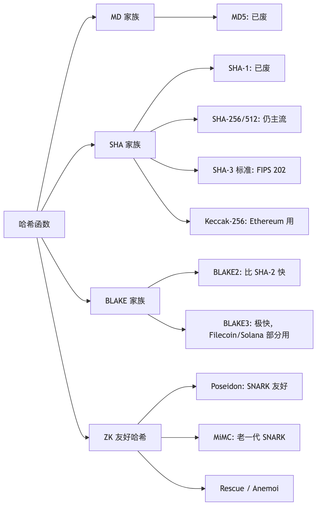
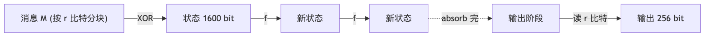
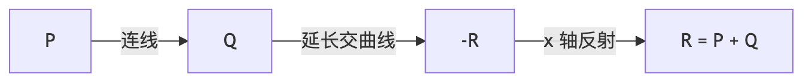
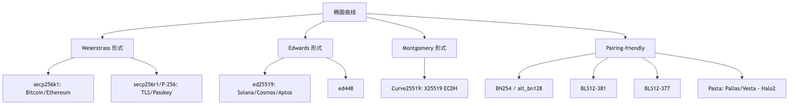
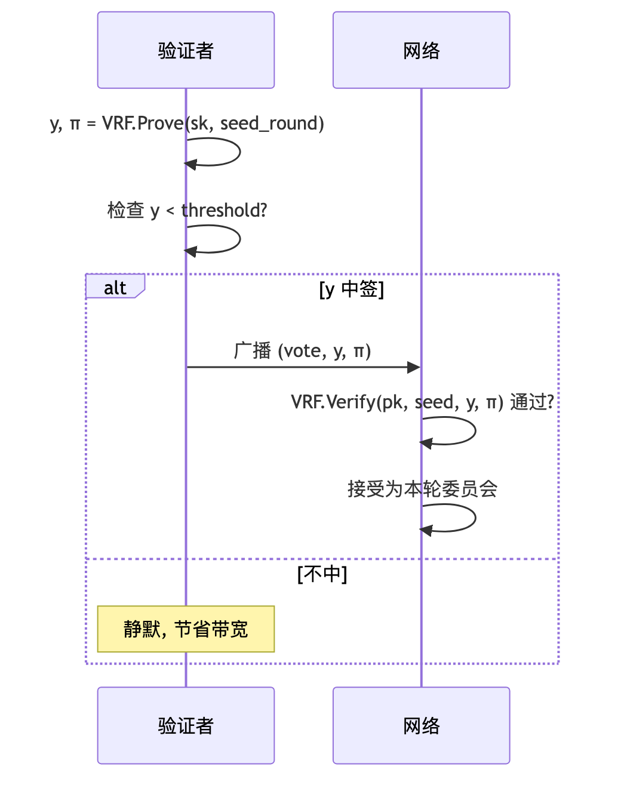
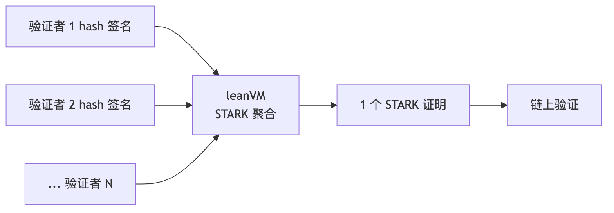
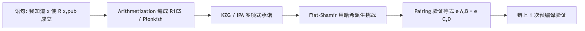

本模块覆盖 Web3 工程师必须掌握的密码学核心：哈希、对称/非对称加密、椭圆曲线、数字签名（ECDSA/Schnorr/BLS）、Merkle 树、承诺方案（KZG/IPA/FRI）、VRF、门限签名/MPC、HD 钱包（BIP-32/39/44）、后量子密码学（PQC）及全同态加密（FHE）。前置：本科 CS 基础，能读 Python。前置环境见模块 00。
工程师的视角：每个原语保证什么 / 不保证什么 / 用错出什么事——而不是从零证明它的安全性。Bitcoin 白皮书发布时（2008），SHA-256 (2001)、ECDSA (1992)、Merkle 树 (1979) 早已成熟，中本聪的贡献是把已有原语搭成无需可信第三方的记账机。
定义。哈希函数 H: {0,1}* → {0,1}^n 把任意长度输入压成固定 n 比特输出（Web3 多用 n=256），算易反推难。
直觉：数字指纹。一字节差异导致输出完全无关；输入再大输出也是 32 字节。
"Hello" → 185f8db32271fe25...
"Hello!" → 334d016f755cd6dc...
1GB 电影 → 3a7bd3e2360a3d29...
| 性质 | 形式化 | 类比 |
|---|---|---|
| 抗原像 | 给 h 找 x 使 H(x)=h 困难 |
警察有指纹找不到人 |
| 抗第二原像 | 给 x 找 x'≠x 同哈希困难 |
做不出和小明指纹相同的假人 |
| 抗碰撞 | 找任意 x≠x' 同哈希困难 |
做不出两个指纹相同的假人（最强） |
抗碰撞 ⇒ 抗第二原像，反之不成立。MD5 抗碰撞已死、抗原像仍撑：可作 ETag，不能做签名。

MD5（Rivest 1991）2004 年由王小云给出实际碰撞构造；SHA-1（NSA, 160 bit）2017 年被 Google + CWI 用 SHAttered 攻击约 6500 CPU 年内破。两者只剩防意外损坏的价值（MD5SUMS、Content-MD5、git commit id）。Web3 任何"防篡改 / 签名"位置遇到 MD5/SHA-1 应直接拒绝。
NSA 2001 发布，SHA-2 家族成员。Bitcoin PoW 把它推成全人类算力最密集函数：全网约 6×10²⁰ H/s（https://www.blockchain.com/explorer/charts/hash-rate）。
H_0 (固定 IV)
for each 512-bit block M_i:
H_i = compress(H_{i-1}, M_i)
长度扩展攻击：已知 H(secret ‖ data) 和 len(data) 可算出 H(secret ‖ data ‖ pad ‖ extra)。SHA-256 当 MAC 必须套 HMAC；SHA-3 海绵结构天然免疫。
| 平台 | 速度 |
|---|---|
| M3 Pro 1 thread | ~600 MB/s |
| Intel SHA-NI 指令集 | ~2,000 MB/s |
| Antminer S21 (ASIC) | ~10^14 H/s |
SHA-256²(x)）。Base58Check(0x00 ‖ RIPEMD-160(SHA-256(pk)) ‖ checksum)。0x01 ‖ SHA-256(KZG_commit)[1:]，把 48 字节 G1 点压成 32 字节。无实际碰撞。最强理论：31/64 轮拟碰撞（Mendel 2013）。量子下 Grover 把抗原像从 2^256 削到 2^128；BHT 算法理论上把抗碰撞降到 2^85，但需 2^85 量子内存，远未可行。NIST SP 800-208 认为 SHA-256 后量子时代仍适合哈希承诺与 HMAC；长期场景建议升级到 SHA-384/SHA-512。
NIST 2007 启动 SHA-3 竞赛，三轮筛 64→14→5→1，2012-10 Keccak（Bertoni/Daemen/Peeters/Van Assche）胜出，2015-08 FIPS 202 标准化。
状态 1600 bit = r + c（Keccak-256: r=1088, c=512）：

f 是 24 轮置换（θ、ρ、π、χ、ι）。海绵两大优势：c 比特永不外泄（抗长度扩展）+ 任意长输出（继续 squeeze）→ SHAKE128/256。
NIST 标准化时把分隔字节从 0x01 改成 0x06（给 SHAKE/cSHAKE 留位），同输入输出完全不同：
# 输入 'abc'
Keccak-256: 4e03657aea45a94fc7d47ba826c8d667c0d1e6e33a64a036ec44f58fa12d6c45
SHA3-256 : 3a985da74fe225b2045c172d6bd390bd855f086e3e9d525b46bfe24511431532
以太坊 2015 主网上线早于 FIPS 202，用的是原始 Keccak，无法硬分叉回头（要改写所有地址 / 合约 / tx 格式）。
库对齐：Solidity keccak256() = Keccak（0x01），Python hashlib.sha3_256() = FIPS 202（0x06），永不相等。链下要与合约对齐：
Crypto.Hash.keccak（pycryptodome）或 eth_utils.keccak@noble/hashes/sha3 的 keccak_256（不是 sha3_256）sha3 crate 的 Keccak256（不是 Sha3_256）SHA3 opcode，直接读 memory。mapping slot、event topic、abi.encode typeHash。Aumasson 等 2008 提出 BLAKE，SHA-3 决赛败于 Keccak，基于 ChaCha 置换。BLAKE2（2012）精简版，比 SHA-256 快、安全等价。BLAKE3（2020）切消息为 1024 字节叶子独立哈希再两两合并：多核并行、SIMD 友好、流式可分块。实测单核 ~1 GB/s，多核 6+ GB/s，比 BLAKE2 快 5-10×。
小输入（<64B）BLAKE3 反而慢于 SHA-256（树 setup 成本），所以 Solana tx signing 仍用 SHA-256。
| 项目 | 用途 |
|---|---|
| Polkadot/Kusama | BLAKE2b-256 账户哈希 |
| Filecoin | BLAKE2b randomness oracle |
| Solana | solana_program::blake3 可选 |
| IPFS/libp2p | BLAKE2/3 multihash |
| Zcash | BLAKE2b 派生 Sapling key |
Keccak/SHA 按比特设计（XOR/AND），每比特展开为一个 R1CS 约束：Keccak ~150k、SHA-256 ~27k 约束/哈希。状态树深 32 读一次状态 = 480 万约束。代数哈希直接在有限域上做 add/mul/x⁵——每操作 1 约束。
Poseidon（Grassi 等 USENIX'21）的 HADES 结构混合两种 S-box：
前 R_F/2 轮 Full S-box: 每个 state 元素 x⁵ (抗差分)
中 R_P 轮 Partial S-box: 仅首元素 x⁵ (压约束)
后 R_F/2 轮 Full S-box: 每个 state 元素 x⁵
最终 ~250 约束/哈希。约束数对比：
| 哈希 | 年 | 域 | 约束 (R1CS) | 倍率 |
|---|---|---|---|---|
| Keccak-256 | 2008 | 比特 | ~150,000 | 1× |
| SHA-256 | 2001 | 比特 | ~27,000 | 5.5× |
| MiMC | 2016 | BN254 | ~600 | 250× |
| Rescue/Anemoi | 2020/22 | BN254/BLS12-381 | ~250 | 600× |
| Poseidon/Poseidon2 | 2020/23 | BN254/BLS12-381 | ~150-250 | 600-1000× |
论文：https://eprint.iacr.org/2019/458.pdf。Web3 用例：zkSync Era（状态/账户树）、Polygon zkEVM（SMT）、StarkNet（配 Pedersen 承诺）、Aztec（note commitment/nullifier）、Tornado Cash（deposit 树）、Semaphore（群成员证明）。
主网为何不能换 Poseidon：MPT 历史上就是 Keccak，硬分叉换会破坏所有合约 storage layout。zkEVM 被迫在电路里模拟 Keccak，每次状态访问付 ~15 万约束"Keccak 税"。EIP-5988（Poseidon 预编译）短期不会落地。
| 角色 | 例子 |
|---|---|
| 唯一标识 | tx hash / block hash / event topic |
| 状态承诺 | Merkle Root / Patricia Root |
| 派生地址 | keccak256(uncompressed_pubkey[1:])[-20:] |
| CREATE2 | keccak256(0xff ‖ deployer ‖ salt ‖ keccak256(initCode))[12:] |
| 随机种子 | block.prevrandao（即 RANDAO） |
| 消息绑定 | EIP-191 / EIP-712 digest |
| PoW | Bitcoin 双 SHA-256 |
地址取 keccak 输出后 20 字节，前 12 字节丢弃。不同公钥理论上可能撞同地址（生日攻击 ~2^80，现实不可行）。EIP-55 校验和只防手抖，不防攻击。
abi.encodePacked 陷阱Solidity 两种编码：
abi.encode(...)：每参数填 32 字节，安全费 gas。abi.encodePacked(...)：紧凑省 gas，对动态类型不安全。keccak256(abi.encodePacked("a", "bc")) == keccak256(abi.encodePacked("ab", "c"))
// 两边都拼成 0x616263；encodePacked 不写 string 长度前缀
审计要点：abi.encodePacked(...) 后跟 ≥2 个 string/bytes 必须改用 abi.encode，或先单独哈希再拼接。
| 构件 | 全称 | 输入 | 输出 | 例子 |
|---|---|---|---|---|
| PRG | Pseudorandom Generator | 短种子 | 任意长伪随机串 | os.urandom 内核、ChaCha20 stream |
| PRF | Pseudorandom Function | (k, x) |
伪随机 f(x) |
HMAC-SHA256、AES-CMAC |
| RO | Random Oracle（理想模型） | x |
真随机 H(x) |
协议证明中以 Keccak/SHA-256 近似 |
工程映射：BIP-39 PBKDF2、TLS/Noise nonce 派生 = PRG；RFC 6979 确定性 nonce、HMAC = PRF。
ROM 注记：很多协议写"在随机预言机模型下安全"，但 ROM 不是标准模型。常见误解是 EdDSA 比 ECDSA "可证明安全"——两者主流归约都依赖 ROM，EdDSA 归约更干净但前提相同。
定义。同一把密钥 K 加密与解密（AES、ChaCha20）。链上是公开账本，无法安全分享 K，Web3 因此以非对称密码 + 数字签名为主。但对称加密仍承担几个关键的"幕后"角色。
MetaMask 用 PBKDF2 从密码派生加密密钥，再用 AES-GCM 加密助记词存 IndexedDB。Geth keystore 用 scrypt 派生 + AES-128-CTR 加密私钥。密码不直接当 AES key——先 PBKDF2/scrypt/argon2 跑几十万轮，让每次暴力尝试付几百毫秒代价。
以太坊节点用 RLPx：ECDH（secp256k1）协商共享秘密 → HKDF 派生 → AES-CTR + HMAC-SHA256 加密+认证。这套组合即 ECIES（Elliptic Curve Integrated Encryption Scheme）。
HKDF（RFC 5869）两步：
PRK = HMAC-SHA256(salt, IKM) # extract: 把任意熵源压成统一长度
OKM = HMAC-SHA256(PRK, info ‖ counter) # expand: 从 PRK 拉出任意长 OKM
IKM 是 ECDH 共享秘密，info 是上下文标签（如 "ETH/secp256k1/v1"）：从一个 ECDH 输出派生多把不同用途密钥。libp2p、Noise、Waku、ECIES 全部用 HKDF。
公钥密码学始于 1976 年 Diffie-Hellman 的《New Directions in Cryptography》：把加密与解密钥匙拆成两把，前者公开后者私藏。RSA（Rivest-Shamir-Adleman, 1977）是第一个实用方案。
基于大整数分解难。公钥 (n, e)，私钥 (n, d)：
c = m^e mod n (加密 / 验签)
m = c^d mod n (解密 / 签名)
d 由 (p, q, e) 经费马小定理与中国剩余定理唯一确定。
0x05 (modexp)：通用模幂，可拼出 RSA 验签（罕见）。| 项目 | RSA-2048 | secp256k1 (ECC-256) |
|---|---|---|
| 私钥大小 | 256 字节 | 32 字节 |
| 公钥大小 | 256 字节 | 33 字节（压缩） |
| 签名大小 | 256 字节 | 64-65 字节 |
| 安全等级 | ~112 比特 | ~128 比特 |
| 速度（签） | 慢 | 快 |
| 是否可聚合 | ✗ | ✓（Schnorr/BLS） |
| 链上验证 gas | 极贵 | ecrecover 仅 3000 gas |
RSA 不是不安全，是不经济：链上字节 8 倍、验证 gas 不友好、签名不可聚合。量子下 Shor 同时破解 RSA 与 ECC，两者都需迁移到 PQC（第 11 章）。
定义。有限域 F_p 上的椭圆曲线（短 Weierstrass 形式）：
E: y² = x³ + a·x + b (mod p), 且 4a³ + 27b² ≢ 0
mod p 后曲线是离散点集，加上无穷远点 O 构成阿贝尔群。"椭圆"之名与几何椭圆无关——源于椭圆积分。
点加法（直觉）：连接 P、Q 的直线必交曲线第三点 −R，对 x 轴反射得 R = P + Q。

点乘：n·P = P + P + ... + P（n 次）。
Q = n·P，double-and-add，时间 O(log n)。P, Q 求 n，即 ECDLP（椭圆曲线离散对数问题），最优通用算法 Pollard rho O(√n)。私钥 d ∈ [1, n-1] 随机，公钥 Q = d·G（G 固定基点）。算 Q 易，反推 d 难——这是 ECDSA、Schnorr、ECDH 全部的安全基石。

p = 2^256 − 2^32 − 977 ≈ 2^256（基域）
y² = x³ + 7 (mod p) （注意 a=0）
n = FFFFFFFFFFFFFFFFFFFFFFFFFFFFFFFE BAAEDCE6AF48A03BBFD25E8CD0364141
（子群阶，约 2^256）
G = 04 79BE667E... 483ADA77... （未压缩基点，65 字节）
h = 1 （余因子）
来源：SECG SEC 2 v2（https://www.secg.org/sec2-v2.pdf）。安全等级 ~128 bit（Pollard rho ≈ 2^128），无已知子指数攻击；量子下 Shor 多项式时间破解。
| 用途 | 说明 |
|---|---|
| Bitcoin 钱包 | P2PKH/P2WPKH/P2TR 全栈 |
| 所有 EVM 链 EOA | Ethereum、Arbitrum、Optimism、BSC、Polygon... |
Cosmos ethsecp256k1 |
Evmos / Injective 等 EVM-on-Cosmos |
| Stellar (额外支持) | 部分桥接路径用 |
| 语言 | 推荐库 | 备注 |
|---|---|---|
| C | libsecp256k1 v0.7.1（Bitcoin Core） |
工业标准，最严格审计 |
| Rust | k256（RustCrypto）/ secp256k1 crate |
wagmi 底层 |
| Go | decred/dcrd/dcrec/secp256k1 |
go-ethereum |
| Python | coincurve 21.0.0（libsecp256k1 绑定） |
本指南选用 |
| JS | @noble/curves/secp256k1 v2.2.0 |
浏览器、ESM-only |
secp256k1 与 secp256r1 名称仅差一字母但生态完全隔绝。Apple Secure Enclave、WebAuthn/Passkey 用 r1。"Passkey 登录以太坊"难就在于硬件给的是 r1 签名，需 EIP-7212 预编译才能链上验。
p = 2^256 - 2^224 + 2^192 + 2^96 - 1
y² = x³ - 3x + b (a = -3，与 k1 的 a=0 是关键区别)
n ≈ 2^256, h = 1
~128 bit 安全，与 k1 同等。曲线参数中常数 b 由 NSA 2000 年提供且来源不透明——DJB 因此推动 Curve25519 路线。Web3 用途：
| 场景 | 说明 |
|---|---|
| 硬件钱包 (Apple Secure Enclave) | iCloud Keychain 钱包私钥 |
| WebAuthn / Passkey | 用浏览器 / TouchID 登录 dApp |
| ERC-4337 账户抽象 | 把 Passkey 签名转成合约可验的形式 |
| 部分跨链桥 | TLS 链路认证 |
库：C OpenSSL/BoringSSL、Rust p256、JS @noble/curves/p256；链上 RIP-7212 P256_VERIFY 预编译已在 Polygon zkEVM / Optimism / Arbitrum / zkSync 上线，主网通过 EIP-7951 推进。
Montgomery 形式: y² = x³ + 486662·x² + x (mod 2^255 − 19)
基点 x = 9, 余因子 h = 8 ← 关键
DJB（Bernstein, 2005）设计。基域素数 2^255 − 19 让模约简可用一条特殊 reduction 指令——"25519" 名字的由来。~128 bit 安全，参数推导完全公开（无 NIST 魔数阴影）；但余因子 h=8 让朴素实现可能落入小子群攻击，这是 Ristretto255 出场的原因（4.3.4）。Web3 用途：
| 场景 | 说明 |
|---|---|
| X25519 密钥协商 | TLS 1.3、Noise 协议、libp2p、ECIES 派生层 |
| Solana 子产品 (libra-crypto) | 早期 Solana Libra 模块用 X25519 |
| Cosmos IBC 通道加密层 | 通讯密钥派生 |
| Tor / Signal / WhatsApp | 端到端加密握手 |
库：C libsodium、Rust x25519-dalek、JS @noble/curves/ed25519 含 x25519、Python pynacl。
Curve25519/Ed25519 余因子 h=8，把"曲线点"和"群元素"混用会触发小子群攻击。Ristretto（Hamburg 2015）是一层编码：把余因子 8 的曲线点重新编码到一个素数阶群，多个不同曲线点可映射到同一 Ristretto 元素，彻底消除小子群陷阱。安全继承 Curve25519。
| 场景 | 说明 |
|---|---|
| Polkadot/Kusama (sr25519) | Schnorrkel = Schnorr + Ristretto over Curve25519 |
| Zcash Sapling / Orchard | 内部承诺方案的群 |
| Monero（Ristretto-style 编码） | 隐私交易底层 |
| Filecoin / IPFS | 部分 zk 协议素数阶群 |
库：Rust curve25519-dalek 事实标准；JS @noble/curves/ed25519 的 ristretto255 子模块。
Twisted Edwards: -x² + y² = 1 + d·x²·y² (d = -121665/121666)
基点 B: 4·(2/√(d-1)·...) 唯一构造，无魔数
余因子 h = 8
与 Curve25519 同构，~128 bit 安全，EdDSA 签名跑在它上面。Web3 用途：
| 链 | 使用方式 |
|---|---|
| Solana | 全局账户密钥（pubkey 即地址，32 字节 base58） |
| Aptos / Sui | Move 生态钱包默认 |
| Cosmos SDK | 验证者共识签名（Tendermint Core 选 ed25519） |
| NEAR | Account 密钥派生 |
| Polkadot | sr25519（Ristretto + Schnorr）+ ed25519（备选） |
| Cardano | extended ed25519 (BIP-32-Ed25519) |
| Stellar | 全栈 |
| Algorand | 账户密钥 |
库：C libsodium/ed25519-donna，Rust ed25519-dalek，JS @noble/curves/ed25519，Python pynacl/cryptography.hazmat，Solana 链上 solana_program::ed25519_program。Solana pubkey 即地址（32 字节 base58，44 字符），省去 keccak 提取 20 字节但地址更长。
extcodesize 直接。Cosmos/Tendermint 共识用 ed25519，用户默认 secp256k1（Bitcoin 兼容）；SDK v0.50 支持多算法插件，EVM 链（Evmos/Injective）用 ethsecp256k1 + keccak[12:] 地址。Polkadot 默认 sr25519（Schnorr + Ristretto over Curve25519），备选 ed25519 / ecdsa；助记词导入 MetaMask 看不到资产，因为派生密钥完全不同。
Barreto-Naehrig 曲线（2005），基域 p ≈ 254 bit，嵌入度 k = 12，pairing 落在 F_{p^12}。2017 年 Kim-Barbulescu exTNFS（IACR 2016/758）把安全性从 128 bit 削到 ~100 bit，新协议必须迁移。
| 协议 | 用法 |
|---|---|
| Tornado Cash | Groth16 证明 |
| Aztec V1 | zk-zk-Rollup 早期 |
| Loopring 3.x | zk-DEX 状态证明 |
| drand evmnet | 上链 BLS 签名（兼容预编译） |
EVM 预编译 0x06/0x07/0x08 |
EIP-196 / EIP-197（兼容性永保留） |
库：C++ libff、Rust ark-bn254、Go gnark-crypto、Python py_ecc.bn128、Solidity 直接调预编译。
基域 p ≈ 381 bit (q1)
子群阶 r ≈ 255 bit
嵌入度 k = 12
G1 ⊂ E(F_p), G2 ⊂ E(F_{p²}) 的扭子群
Sean Bowe 2017 为 Zcash Sapling 设计。抗 exTNFS 后真实安全 ~128 bit，比 BN254 多 ~30 bit 裕度。后量子下仍死（pairing 基于 ECDLP），需换 STARK。
以太坊共识层（Beacon Chain）核心：
EIP-2537 把 BLS12-381 预编译加入 EVM，Pectra（2025-05-07，epoch 364032，https://blog.ethereum.org/2025/04/23/pectra-mainnet）激活。其它用途：
| 项目 | 用法 |
|---|---|
| Filecoin | 全栈共识签名 |
| Chia | Plot/Pool BLS 签名 |
| Chainlink CCIP | DON 委员会聚合签名 |
| EigenLayer | AVS operator 投票 |
| Zcash Sapling | 内部承诺曲线 |
库：C blst（supranational，经审计，工业标准）、Rust blst binding 或 arkworks-rs（Lighthouse 等共识客户端）、Go gnark-crypto/ecc/bls12-381 或 go-eth2-client（Prysm）、Python py_ecc.bls12_381 或 milagro-bls、Solidity 走 EIP-2537 预编译。
Pallas: y² = x³ + 5 over F_p (p ≈ 255 bit)
Vesta : y² = x³ + 5 over F_q (q ≈ 255 bit)
|E_Pallas(F_p)| = q, |E_Vesta(F_q)| = p
即一条曲线的标量域 = 另一条的基域
Zcash 团队为 Halo2 设计。循环对使"曲线 A 上的证明能验证曲线 B 上的证明"——递归 SNARK 成为可能。~125 bit 安全，无 pairing，搭配 IPA 承诺。用途：Mina（22KB 区块链）、Aleo、Zcash NU5 Orchard、部分 zkVM。库：Rust pasta_curves、halo2 内置；JS 端实现少。
| 曲线 | 形式 | 用途 | 私/公/签 字节 |
|---|---|---|---|
| secp256k1 | Weierstrass | EVM EOA / Bitcoin | 32 / 33 / 65 |
| secp256r1 (P-256) | Weierstrass | TLS / Passkey / RIP-7212 | 32 / 33 / 64 |
| Curve25519 | Montgomery | X25519 ECDH | 32 / 32 / - |
| Ristretto255 | (编码层) | sr25519 / Zcash Sapling | 32 / 32 / 64 |
| ed25519 | Edwards | Solana / Cosmos / Aptos / Sui | 32 / 32 / 64 |
| BN254 (alt_bn128) | Pairing | EVM zk-SNARK 旧 | 32 / 64 / - |
| BLS12-381 | Pairing | Beacon Chain / 新 zk / 跨链 | 32 / 48 / 96 |
| Pallas / Vesta | 循环对 | Mina / Aleo / Halo2 递归 | 32 / 32 / - |
简记：用户账户 secp256k1，共识层 BLS12-381，高性能链 ed25519，BN254 是历史包袱。
数字签名提供三个保证：身份认证、完整性、不可否认性。私钥签，公钥验。
Bitcoin 与所有 EVM 链 EOA 都用 secp256k1 上的 ECDSA。
Sign(d, m):
z = keccak256(m)
k ← random in [1, n-1]
(x1, y1) = k·G
r = x1 mod n, 若 r=0 重选 k
s = k^(-1)·(z + r·d) mod n
return (r, s)
Verify(Q=d·G, m, (r, s)):
z = keccak256(m)
u1 = z·s^(-1) mod n
u2 = r·s^(-1) mod n
(x', _) = u1·G + u2·Q
accept iff r ≡ x' (mod n)
Sony PS3 用静态 k（fail0verflow，27C3，2010）。同一 k 两次签名 (r, s1), (r, s2) 对 z1, z2：
s1 - s2 = k^(-1)·(z1 - z2) ⇒ k = (z1 - z2) / (s1 - s2)
s1 = k^(-1)·(z1 + r·d) ⇒ d = (s1·k - z1) / r
两条消息 + 静态 k = 私钥泄露。现代实现一律用 RFC 6979 确定性 nonce：k = HMAC(d, m)，根除 RNG 缺陷风险。
数学事实：(r, s) 合法 ⇒ (r, n-s) 也合法。2014 年 Mt.Gox 攻击者翻转 mempool 中提款 tx 的 s，txid 改变但 tx 仍合法，触发交易所"失败重发"双花。EIP-2 强制 low-s（s ≤ n/2）；OZ ECDSA.sol v4.7.3+ 拒绝 high-s。
ecrecover(hash, v, r, s) 做公钥恢复。R 在曲线上对应两个候选 y，v 本质是 yParity（1 bit 消歧）：
| 场景 | v 的取值 |
|---|---|
| 原始 Bitcoin | 0/1（裸 yParity） |
| 以太坊主网早期 | 27/28（= yParity + 27） |
| EIP-155 Legacy tx | chainId·2 + 35 + yParity |
| EIP-1559 Type 2 tx | yParity (0/1) |
| EIP-2098 紧凑签名 | yParity 编进 s 的最高位 |
ecrecover 任一条件不满足返回 address(0)：(1) v 不在 {27, 28}；(2) r = 0 或 r ≥ n；(3) s = 0 或 s ≥ n；(4) EIP-2 后 s > n/2。
审计要点：ecrecover(...) == storedSigner 而无 require(storedSigner != address(0)) 时，攻击者可构造返回 0 的签名，在 storedSigner 未初始化（默认 0）的代码路径伪造通过。OZ ECDSA.recover 已默认处理此边界。
low-s 后 s 最高位恒 0（s ≤ n/2 < 2^255），EIP-2098 把 yParity 塞进该位：
compact = r ‖ ((yParity << 255) | s) # 64 字节
s_back = compact[32:] & ((1 << 255) - 1)
v_back = (compact[32] >> 7) ? 28 : 27
calldata gas 省 ~8%，ERC-4337、Permit2、Seaport 广泛使用。
让钱包展示"你在签什么"。标准 digest：
digest = keccak256( "\x19\x01" ‖ domainSeparator ‖ hashStruct(message) )
domainSeparator = keccak256(EIP712Domain typeHash ‖ encoded fields)（含合约名、版本、chainId、合约地址）。hashStruct(s) = keccak256(typeHash ‖ encodeData(s))。encodeData：原子类型 32 字节填充；string/bytes/数组先哈希；嵌套 struct 递归 hashStruct。KeyGen: sk ← 32B random
h = SHA-512(sk), a = clamp(h[0:32]), prefix = h[32:64]
pk = a·B (B = ed25519 基点)
Sign(m): r = SHA-512(prefix ‖ m) mod L ← 确定性 nonce
R = r·B
c = SHA-512(R ‖ pk ‖ m) mod L
s = (r + c·a) mod L
σ = (R, s) # 64 字节
Verify: c = SHA-512(R ‖ pk ‖ m) mod L
accept iff s·B = R + c·pk
与 ECDSA 的关键差别：
Schnorr（1989）比 ECDSA 还早，因专利（US 4995082）被 NIST 排除。专利 2008 年到期，Bitcoin 2021 年通过 Taproot 上线。BIP-340 的关键约束：
R.y 或 P.y 为奇取负。t(tag, x) = SHA-256(SHA-256(tag) ‖ SHA-256(tag) ‖ x) 防跨协议重放。Sign(sk, m, auxRand):
若 P.y 奇: d = n - sk, P = -P
t = d XOR t("BIP0340/aux", auxRand)
k = t("BIP0340/nonce", t ‖ P.x ‖ m) mod n
R = k·G; 若 R.y 奇: k = n - k
e = t("BIP0340/challenge", R.x ‖ P.x ‖ m) mod n
s = (k + e·d) mod n
σ = R.x ‖ s # 32 + 32 = 64 字节
Verify(P.x, m, σ):
P = lift_x(P.x)
e = t("BIP0340/challenge", R.x ‖ P.x ‖ m) mod n
R' = s·G - e·P
accept iff R'≠O ∧ R'.y 偶 ∧ R'.x = R.x
ECDSA 与 Schnorr 对比：
| 维度 | ECDSA | Schnorr |
|---|---|---|
| 可证明安全 | 启发式 | ROM 下严格归约到 ECDLP |
| 线性性 | ✗（有 k^(-1)） | ✓，(d1+d2)·G = P1+P2 |
| 签名长度 | 71-72B (DER) / 64-65B | 固定 64B |
| 实现复杂度 | 高（DER + low-s + ecrecover） | 低 |
| 批验证 / 多签聚合 | ✗ / 极难 | ✓ / 天然（MuSig2） |
BIP-341/342（Taproot/Tapscript）2021-11-14 区块 709,632 激活。P2TR 输出 OP_1 <32B x-only pubkey>，公钥不是裸 sk·G 而是带内部 commit 的 tweaked key：
P_internal = sk·G
t = tagged_hash("TapTweak", P_internal.x ‖ merkle_root)
P_output = P_internal + t·G # 链上看到的公钥
merkle_root 是脚本路径的 Merkle 根（无脚本则为空）。Tweak 让 key path 与 script path 在链上不可区分。Bitcoin P2TR 输出占比已超 35%。
以太坊目前无 Schnorr 预编译（EIP-665/7503 讨论中），合约模拟 ~200k gas，实务做法是链下 Schnorr/MuSig 聚合 → 链上 ECDSA 提交。
BLS（Boneh-Lynn-Shacham 2001）基于双线性配对 e: G1 × G2 → GT：
KeyGen: sk ∈ Z_r, pk = sk·G1 (以太坊共识用 G1 公钥)
Sign(m): σ = sk·H(m) (H: hash-to-G2)
Verify: e(G1, σ) == e(pk, H(m))
聚合 (n 个签名同消息):
σ_agg = σ1 + ... + σn ∈ G2
pk_agg = pk1 + ... + pkn ∈ G1
e(G1, σ_agg) == e(pk_agg, H(m)) # 一次 pairing 验 n 个
以太坊共识层活跃验证者超 100 万，每 epoch 全部投票被 BLS 聚合压成少量聚合签名（https://beaconcha.in/charts/validators）。
Mallory 设 pk_M = X·G1 - pk_B（X 任选，Mallory 不需要知道 sk_M 对应私钥），则 pk_agg = pk_B + pk_M = X·G1。她用 X 对消息 m 签出 σ，对外宣称这是 Alice + Bob + Mallory 的聚合签名（伪造的是针对该 m 的聚合签名，不是任意签名）。
防御（PoP）：注册公钥时附带 σ_pop = sk·H_pop(pk)。Mallory 无法为构造的 pk_M 给出合法 PoP。以太坊共识层采用此方案。
Pectra（2025-05-07，epoch 364032）通过 EIP-2537 把 BLS12-381 预编译加入 EVM，使跨链桥轻客户端、ERC-4337 BLS 多签、drand 链上验证成为可能。同一升级的 EIP-7702 让 EOA 临时拥有合约能力（https://eips.ethereum.org/EIPS/eip-7702）。
| 方案 | 曲线 | 单签 B | 公钥 B | 聚合 | 速度 | 用途 |
|---|---|---|---|---|---|---|
| RSA-2048 | - | 256 | 256 | ✗ | 中 | TLS / JWT |
| ECDSA k1 | secp256k1 | 64-65 | 33 | ✗ | 快 | Bitcoin / EVM EOA |
| ECDSA r1 | secp256r1 | 64 | 33 | ✗ | 快 | TLS / Passkey |
| EdDSA | ed25519 | 64 | 32 | △ 有限 | 极快 | Solana / Cosmos |
| Schnorr | secp256k1 | 64 | 32 | ✓ MuSig | 快 | Bitcoin Taproot |
| BLS | BLS12-381 | 96 | 48 | ✓ 天然 | 慢（pairing） | Eth 共识 / 跨链 |
| 现象 | 原因 |
|---|---|
ecrecover 返回 0x0 |
s > n/2 / v 不对 / r 或 s 越界 |
| 链下验通过链上不通过 | EIP-712 domain 不一致；abi.encode vs encodePacked 混用 |
| testnet 通过 mainnet 不通过 | EIP-712 domain 的 chainId 没换 |
| 紧凑签名旧合约不认 | 旧合约只支持 65B；升级 OZ ECDSA v4.7.3+ |
| BLS 聚合验证失败 | 没做 PoP / hash-to-curve domain tag 错 |
Merkle 树（Merkle 1979）：内节点 = H(左子 ‖ 右子)，根承诺整棵树。任一叶子改变根改变；32 字节根承诺任意大集合，成员证明长度 O(log n)。
证明"我是 A"提供兄弟路径 [H(B), H_CD]，验证者算 H(H(H(A) ‖ H(B)) ‖ H_CD) == Root。
parent(a, b) = keccak256(min(a, b) ‖ max(a, b)) // 按字节序
验证时不需要兄弟左右信息。代价：叶子不能让内部哈希参与，否则跨层取值可被伪造（参 2022 Solana NFT Merkle 漏洞）。
Layer 5 (根): ────────── Root ──────────
│
Layer 4 : ┌─────── h0_15 ─── h16_31 ───────┐
Layer 3 : ┌─ h0_7 ── h8_15 ──┐ ┌── h16_23 ── h24_31 ──┐
Layer 2 : h0_3 h4_7 h8_11 h12_15 h16_19 h20_23 h24_27 h28_31
Layer 1 : ...
Layer 0 : L0 L1 L2 ... L31
32 叶 → 5 层 → 证明长度恰好 5 个哈希。OZ 兼容的 Python 实现见 code/03_merkle_tree.py。
| 场景 | 例子 |
|---|---|
| Airdrop 白名单 | Uniswap UNI 空投、Optimism OP 空投 |
| L1 → L2 消息证明 | Optimism 的 OutputRoot |
| Bitcoin SPV 钱包 | 验证某 tx 在某块里 |
| ZK rollup 状态 | 把状态根放到 L1 |
| Sparse Merkle (SMT) | nullifier 树（Tornado Cash） |
普通 Merkle 对插入/更新性能差。以太坊状态是键值库，用 MPT = Trie + Merkle 合并。三种节点：
(shared_nibbles, child_hash)。(remaining_nibbles, value)。区分 Extension/Leaf 和奇偶 nibble 长度，节点 path 前附 1 字节：
| nibbles 长度 | Extension | Leaf |
|---|---|---|
| 偶数 | 0x00 | 0x20 |
| 奇数 | 0x1_ | 0x3_ |
graph TD
BH[区块头 BlockHeader] --> SR[stateRoot]
BH --> TR[transactionsRoot]
BH --> RR[receiptsRoot]
BH --> WR[withdrawalsRoot]
SR --> S1[每个账户的 (nonce, balance, codeHash, storageRoot)]
S1 --> ST[每个账户自己的 storageTrie]每账户 storage 自有一棵树。访问一个 slot ~5 次 trie 查找——SLOAD 的 2100 gas 大头是读 trie，不是算。
MPT 痛点是证明大小（每层带 15 个兄弟哈希）。Verkle 用多项式承诺（KZG/IPA）把证明从 O(log_{16} N · 15·32B) 压到 O(log_{256} N · 200B)，对无状态以太坊至关重要。
深度 256 满树，叶子位置由 key 决定。inclusion / exclusion 证明结构一致（ZK 友好），但空树太大，需懒哈希缓存全空子树。
| 数据结构 | 链上 | 链下 | 优点 |
|---|---|---|---|
| 标准 Merkle | airdrop, OP fault | 简单 | 实现门槛最低 |
| MPT | Eth stateRoot | 慢但通用 | 支持插入删除 |
| Verkle | 未来 Eth | 证明小 | stateless 友好 |
| SMT | zkSync, Polygon zkEVM | inclusion=exclusion | ZK 友好 |
| Indexed Merkle | Aztec, Tornado | 支持遍历 | 用于 nullifier |
承诺方案满足两条性质：
最简哈希承诺 C = H(m ‖ r) 满足两性质，但密码学承诺通常还要求代数性质（如加法同态），以便在密文上做运算或证明断言。
固定两个生成元 g, h（要求 log_g(h) 未知）：
Commit(m, r) = g^m · h^r
(m', r') 等价解 DLP。C(m1,r1)·C(m2,r2) = C(m1+m2, r1+r2)。Bitcoin 隐私交易 Confidential Transactions（Maxwell 2015）/ Mimblewimble：金额 C_i = g^{v_i}·h^{r_i}，同态检查 ΣC_in / ΣC_out = h^{Σr_in − Σr_out}，配 Bulletproofs range proof 保证 v_i ≥ 0。
KZG（Kate-Zaverucha-Goldberg, ASIACRYPT 2010）对多项式 f(X) 承诺，可高效证明任意点 f(z) = y。
Setup (trusted): SRS = { [τ^0]_1, ..., [τ^d]_1, [τ^0]_2, [τ^1]_2 }, 烧毁 τ
Commit: C = [f(τ)]_1 = Σ f_i · [τ^i]_1 ∈ G1, 48 字节
Open : 证 f(z)=y, 构造 q(X) = (f(X) - y)/(X - z)
(因式定理保证 X-z 整除 f(X)-y)
π = [q(τ)]_1 ∈ G1, 48 字节
Verify: e(π, [τ-z]_2) == e(C - [y]_1, [1]_2)
证明 48 字节常数，与多项式度无关。Ethereum KZG Ceremony：2023-01-13 至 2023-08-08，141,416 份贡献（https://blog.ethereum.org/en/2024/01/23/kzg-wrap）；只要任一参与者诚实销毁贡献，τ 就无人知晓（1-of-n trust）。产物随 Dencun（2024-03，EIP-4844）上链生效。
EIP-4844 把 Rollup 数据放进 blob（~128KB），KZG 承诺压成 32B versioned hash，L2 数据成本降 ~10×。预编译 0x0a（POINT_EVALUATION）验证 blob 某点取值。
IPA（Inner Product Argument, 2019）：无 trusted setup，证明 O(log n)，验证 O(n)。用于 Halo2、Mina、Verkle Tree 备选。
FRI（Fast Reed-Solomon IOP, Ben-Sasson 2018）：基于哈希，透明 + 抗量子，证明 O(log² n)。用于 StarkNet / StarkEx / Polygon Miden。
| 方案 | 承诺 B | 证明 B | Prover | Verifier | Trusted Setup | 抗量子 |
|---|---|---|---|---|---|---|
| Merkle | 32 | O(log n)·32 | O(n) hash | O(log n) hash | ✗ | ✓ |
| Pedersen | 48 | O(n) | O(n) EC | O(n) EC | ✗ | ✗ |
| KZG | 48 | 48 (常数) | O(n log n) FFT | 1 pairing | ✓ | ✗ |
| IPA | 48 | O(log n)·48 | O(n) EC | O(n) EC | ✗ | ✗ |
| FRI | 32 | O(log²n)·32 | O(n log n) | O(log²n) hash | ✗ | ✓ |
KZG 常数证明但需 trusted setup；FRI 透明且抗量子但证明较大——STARK（FRI 系）与 SNARK（KZG/IPA 系）的路线分歧本质在此。
keccak256(blockhash, ...) 能被出块者操纵：预先看结果再决定要不要出块。VRF（Verifiable Random Function, Micali-Rabin-Vadhan 1999）给出三条性质：
(sk, x) 永远给同一个 y。(pk, x, y, π) 可验 y 合法。Prove(sk, x):
H = hash_to_curve(pk ‖ x) # 把 x 哈希到曲线上一点
Γ = sk · H # VRF 的"输出点"
k = nonce_generation(sk, H) # RFC 6979 风格确定性 nonce
c = hash_points(H, pk, Γ, k·B, k·H)
s = k + c·sk mod q
π = (Γ, c, s)
y = hash(0x03 ‖ Γ) # 真正的随机输出
Verify(pk, x, y, π):
H = hash_to_curve(pk ‖ x)
U = s·B - c·pk
V = s·H - c·Γ
c' = hash_points(H, pk, Γ, U, V)
接受 iff c' == c 且 y == hash(0x03 ‖ Γ)
Algorand 共识用 VRF 做密码学抽签：每轮每账户用自己的 sk 算 VRF 输出 y，y 落入某区间即当选委员会成员，再广播 (y, π) 让所有人验证。

委员会成员事先不可预测，攻击者无法针对性 DDoS。
Chainlink VRF v2.5 是 Web3 最广泛使用的 VRF 服务：
requestRandomWords(...) 抛事件。(y, π)。fulfillRandomWords，合约用预编译或 Solidity 库验 π。NFT 抽奖、链上游戏掉落、Lido 验证者退出排序都在用。安全前提是"节点不能在不广播证明的情况下决定是否回调"（即避免 selective abort）。Chainlink 用订阅扣费 + 可配置 retry 缓解，但某些攻击模型下仍是公开问题。
League of Entropy 运营（Cloudflare、Protocol Labs、EPFL、Kudelski Security、Celo 等，https://www.cloudflare.com/leagueofentropy/）。每 ~3 秒，节点对 H(round_number) 做 BLS 签名，t 个部分签名拉格朗日插值合成最终签名，再 SHA-256 取 32 字节：
randomness_round_N = SHA-256( BLS_aggregate(σ_1, ..., σ_t) )
当前阈值 12-of-22（https://docs.drand.love/about/），验证只需群公钥 pk_agg，无单点信任。
为让 EVM 直接验 drand，2024 上线 evmnet：周期 3 秒、签名在 G1（48 字节）、故意用 BN254 而非 BLS12-381——因为 EVM 原生 alt_bn128 预编译只支持 BN254，合约 ~150k gas 即可验一轮。Pectra（2025-05）激活 EIP-2537 后，drand 可无损迁回 BLS12-381（https://docs.drand.love/blog/2025/08/26/verifying-bls12-on-ethereum/）。
典型用法：
| 场景 | 用法 |
|---|---|
| 链上抽奖 | requestRound(N) → 等到 round N 签名公开 → 取 hash 当种子 |
| Filecoin tickets | 每个 epoch 用 drand 输出选择 leader |
| 公平拍卖结束时间 | 用 round N 的随机性决定"是否再延 1 分钟" |
| zk 协议挑战 | Fiat-Shamir 之外的"确实不可预测"随机源 |
| 维度 | Algorand 内置 VRF | Chainlink VRF v2.5 | drand |
|---|---|---|---|
| 签名方案 | EdDSA 派生的 ECVRF | 自家 ECVRF (secp256k1) | 门限 BLS12-381 / BN254 |
| 信任模型 | 每个验证者持自己 sk | 单 oracle 节点 (有信任) | t-of-n 门限 (无单点) |
| 输出周期 | 每个 slot | 按需请求 | 每 3 秒固定 |
| 可被 "selective abort"？ | 不能（不出块就罚） | 能（节点可不回调） | 不能（t 个诚实即可） |
| 链上验证 gas | 无（共识层用） | ~200k | BN254 ~150k / BLS ~80k |
| 适合场景 | 共识委员会 | 一次性抽奖 | 持续公共随机源 |
普通多签（Gnosis Safe）每人独立签一次，链上看到 n 个签名，gas 也是 n 倍。门限签名让 n 人协作产生一个普通签名，链上不可区分。t-of-n 即 n 人中任意 t 人即可还原签名。
SSS（1979）把秘密 s 编码为 t−1 次多项式：
f(x) = s + a_1·x + a_2·x² + ... + a_{t-1}·x^{t-1}
给 n 人各发 share (i, f(i))。任意 t 个可用拉格朗日插值还原 f(0) = s；t−1 个对 s 完全无信息（信息论安全）。
ECDSA 签名 s = k^(-1)·(z + r·d) 非线性，门限化麻烦。主要方案：
| 方案 | 年 | 签名轮数 | 假设 | 生产采用 |
|---|---|---|---|---|
| Lindell17 | 2017 | 多轮 | Paillier | 早期 ZenGo（2-of-2） |
| GG18 | 2018 | 9 | Paillier | 已不推荐 |
| GG20 | 2020 | 1（在线） | Paillier | 已不推荐 |
| CGGMP21（CMP） | 2021 | 4 | DDH + Schnorr ZK | Fireblocks、Coinbase Custody |
| DKLs19 | 2019 | 多轮 | Oblivious Transfer | Coinbase MPC、Silence Laboratories |
2023 Makriyannis 等公开 GG18/GG20 key extraction 攻击（https://eprint.iacr.org/2023/1234.pdf），主要钱包迁至 CGGMP21。CGGMP21 用 Schnorr-style ZK proof 替代 GG18 的 Feldman VSS，自带可证明安全归约。Fireblocks 开源 mpc-cmp 基于此。DKLs19 用 OT 替代 Paillier，计算轻但通信带宽大。
选库要点：(1) 避开 GG18 漏洞家族；(2) 有 ZK proof 防恶意 party 换 share。CGGMP21 + 实盘审计是当前基线。
DKG: 每方持 sk_i, pk_agg = Σ sk_i · G1
Sign: 每方 σ_i = sk_i · H(m), 收 t 个拉格朗日插值合成 σ
Verify: e(G1, σ) == e(pk_agg, H(m))
用于 drand、Filecoin、Chainlink CCIP、Ethereum DVT。
n 人 2 轮通信产生一个合法 BIP-340 Schnorr 签名，第一轮可在不知道消息时预做完：
KeyAgg(pk_1, ..., pk_n):
L = sorted(pk_1, ..., pk_n)
a_i = H(L, pk_i)
pk_agg = Σ a_i · pk_i
Sign(m):
R1: 每方选 nonce 对 (k_i_1, k_i_2),
广播 R_i_1 = k_i_1·G, R_i_2 = k_i_2·G
R2: b = H(R_1, R_2, pk_agg, m)
R = R_1 + b·R_2, c = H(R, pk_agg, m)
s_i = (k_i_1 + b·k_i_2 + c·a_i·sk_i) mod n
Agg: σ = (R, Σ s_i)
工程优势：(1) 输出是合法 BIP-340 签名，Bitcoin 节点无需升级；(2) 链上多签与单签不可区分；(3) n-of-n 压成 64B 签名 + 32B 公钥。
FROST（Komlo-Goldberg 2020）是 Schnorr 的 t-of-n 版本（MuSig2 是 n-of-n），IETF CFRG RFC 草案最终阶段，Coinbase EdDSA 门限与 Dfinity chain-key signing 都用 FROST 思路。
门限签名是 MPC 的特例。MPC：n 方各持私有输入 x_i，共同计算 f(x_1,...,x_n) 而不暴露自己的 x_i。经典构造：Yao Garbled Circuits（两方）、GMW + BMR（n 方布尔/算术电路）、SPDZ（预处理模型）。
Web3 用途：MPC 钱包（ZenGo / Fordefi / Web3Auth），跨链桥（ChainSafe / Web3Auth TSS），隐私 DEX（Penumbra / Ren Protocol，已退役）。
HD 钱包（Hierarchical Deterministic Wallet）让一串助记词恢复所有链所有账户：
12 词助记词 → 64 字节 seed → 主私钥 m → 派生子密钥 m/44'/60'/0'/0/0
完全确定性：助记词不变则私钥不变。涉及三个标准：BIP-39（助记词）、BIP-32（派生）、BIP-44（路径约定）。
熵 (128 bit) ‖ checksum (4 bit) → 132 bit → 切 11 bit/段 → 12 段 → 查 2048 词表 → 12 个词
24 词对应 256 bit 熵。词表 9 种语言各 2048 词，前 4 字母不重复（便于硬件钱包匹配）。
seed = PBKDF2(
password = NFKD(mnemonic),
salt = "mnemonic" || optional_passphrase,
iterations = 2048,
hLen = 64 # 64 字节, 512 bit
)
optional_passphrase 即"第 25 个词"——同一助记词派生多个独立钱包，常用作诱饵账户防胁迫。
(1) 熵质量决定一切：绝不用 random.random() 或不可信 PRNG，务必 os.urandom / secrets / 硬件 TRNG。(2) 词序敏感、空格敏感（NFKD 之前）、大小写不敏感。(3) 12 词等价 128 bit 熵 + 4 bit 校验，不是 132 bit。
扩展密钥 (k, c)：k 是 32 字节私钥，c 是 32 字节 chain code（防碰撞盐）。派生函数 CKD：
CKDpriv((k_par, c_par), i):
if i >= 2^31: # hardened
I = HMAC-SHA512(c_par, 0x00 || k_par || ser32(i))
else: # non-hardened
I = HMAC-SHA512(c_par, serP(K_par) || ser32(i))
I_L, I_R = I[:32], I[32:]
k_child = (I_L + k_par) mod n
c_child = I_R
hardened vs non-hardened：
i < 2^31）用父公钥派生 → 父 xpub 可推子公钥（watch-only 钱包查 receive 地址）。i >= 2^31，写作 i'）用父私钥派生 → 子公钥无法从父 xpub 推出。安全警告：xpub + 任一非硬化路径的子私钥可反推父私钥。所以真正用于交易的路径必须 hardened。
m / purpose' / coin_type' / account' / change / index
各字段含义：
| 段 | 含义 | 示例 |
|---|---|---|
purpose' |
协议版本（44 = BIP-44） | 44' |
coin_type' |
币种（SLIP-44 注册） | Bitcoin=0', Ethereum=60', Solana=501' |
account' |
账户编号（多账号隔离） | 0', 1', ... |
change |
0=外部地址, 1=找零地址 | 0 (Ethereum 一律 0) |
index |
该账户下第几个地址 | 0, 1, ... |
以太坊主路径：m/44'/60'/0'/0/0（MetaMask 第 1 个地址）。
Ledger Live 默认用 m/44'/60'/N'/0/0，与 MetaMask 的 m/44'/60'/0'/0/N 结构不同，导入时必须选对，否则地址完全不一样。
BIP-32 只针对 secp256k1。Ed25519 余因子 8 + scalar 长度不同，直接套用破坏安全性；SLIP-0010 给出正确规范。
Ed25519 上只支持 hardened 派生——私钥不是直接 scalar，无"由公钥派生子公钥"的代数结构。Solana/Aptos/Sui 的 watch-only 不能从 xpub 推地址。
| 钱包 | 默认路径 |
|---|---|
| MetaMask | m/44'/60'/0'/0/N |
| Ledger Live | m/44'/60'/N'/0/0 (注意结构不同！) |
| Trezor | m/44'/60'/0'/0/N |
| Trust Wallet | m/44'/60'/0'/0/N |
| Phantom (Solana) | m/44'/501'/N'/0' |
| Solflare (Solana) | m/44'/501'/0'/N'(可选 m/44'/501'/N') |
Ledger 助记词导入 MetaMask 看不到资产——路径不同地址不同，不是钱包丢了。
Beacon Chain 验证者私钥的标准化加密存储格式，类似 Geth V3 keystore 但专为 BLS12-381 优化（https://eips.ethereum.org/EIPS/eip-2335）。
{
"crypto": {
"kdf": {
"function": "scrypt",
"params": { "dklen": 32, "n": 262144, "p": 1, "r": 8, "salt": "..." },
"message": ""
},
"checksum": {
"function": "sha256",
"params": {},
"message": "<32 字节 SHA256(decryption_key[16:32] || cipher_message)>"
},
"cipher": {
"function": "aes-128-ctr",
"params": { "iv": "..." },
"message": "<加密后的 BLS 私钥>"
}
},
"description": "validator-1",
"pubkey": "<48 字节 BLS 公钥>",
"path": "m/12381/3600/0/0/0", // EIP-2334 signing key 路径（withdrawal key 为 m/12381/3600/0/0）
"uuid": "...",
"version": 4
}
decryption_key。SHA256(decryption_key[16:32] || cipher.message)，需等于 checksum.message，否则密码错误直接拒绝。decryption_key[:16] 做 AES-128-CTR 解密得 BLS 私钥。精致点：checksum 用 decryption_key 后 16 字节，AES key 用前 16 字节——即使 checksum 被取仍得不到完整 AES key（envelope encryption）。
m/12381/3600/i/0（提款凭证，冷存）m/12381/3600/i/0/0（attestation/block 签名，热钱包）12381 = BLS12-381；3600 = ETH2 SLIP-44 编号。密钥派生是 EIP-2333（HKDF 方案），不是 BIP-32 的椭圆曲线加法。
ECDSA、Schnorr、BLS、ECDH 的安全性都建在 ECDLP 上。量子计算机的 Shor 算法摧毁这个假设——PQC 是不可回避的下一步。
O(N) → O(√N)。2^256 → 2^128（仍够）；抗碰撞经 BHT 理论 2^85，受量子内存限制远未可行。2^128 → 2^64（NIST 仍列 Category 1，并行加速有上界）；AES-256 抗暴力 2^128（Category 5）。结论：哈希与对称只需加大 key size；所有基于 DLP/ECDLP/RSA 的公钥密码必须换路线。
NIST 2016 年启动，2024-08 发布三个最终标准（https://csrc.nist.gov/news/2024/postquantum-cryptography-fips-approved）：
| 标准 | 别名 | 类型 | 数学基础 |
|---|---|---|---|
| FIPS 203 | ML-KEM (CRYSTALS-Kyber) | KEM/加密 | 模格 LWE |
| FIPS 204 | ML-DSA (CRYSTALS-Dilithium) | 签名 | 模格 LWE |
| FIPS 205 | SLH-DSA (SPHINCS+) | 签名 | 哈希基 |
后续还有 FIPS 206（Falcon）、HQC 等。
替代 RSA/ECDH。
| 级别 | 公钥 | 密文 | 等效安全 |
|---|---|---|---|
| ML-KEM-512 | 800 B | 768 B | AES-128 |
| ML-KEM-768 | 1184 B | 1088 B | AES-192 |
| ML-KEM-1024 | 1568 B | 1568 B | AES-256 |
ML-KEM-768 公钥 1184B，是 secp256k1 33B 的 36 倍，链上存储 gas 显著。
替代 ECDSA / Schnorr。
| 级别 | 公钥 | 签名 | 等效安全 |
|---|---|---|---|
| ML-DSA-44 | 1312 B | 2420 B | AES-128 |
| ML-DSA-65 | 1952 B | 3293 B | AES-192 |
| ML-DSA-87 | 2592 B | 4595 B | AES-256 |
签名 ~2.4 KB 是 ECDSA 的 38 倍——迁移阻力的大头。
完全基于哈希（Lamport + Merkle + WOTS+），不依赖任何困难数学假设。代价：签名 8-50 KB，适合国家根 CA 签固件、长期存档；Web3 短期不会用。
Vitalik 的 Post-quantum Ethereum Roadmap（https://pq.ethereum.org/）指出 4 个组件需 PQC 升级：(1) 共识层 BLS（pairing 死）；(2) 数据可用性 KZG（pairing 死）；(3) EOA ECDSA（DLP 死）；(4) zk-SNARK（KZG/IPA 系全死，FRI 系幸存）。
| 当前 | 后量子替代 | 备注 |
|---|---|---|
| ECDSA (EOA) | ML-DSA / SLH-DSA / Lamport | 通过 AA + EIP-7702 平滑迁移 |
| BLS (共识) | leanSig（hash-based 多签）+ STARK 聚合 | 见下 |
| KZG (DA) | STARK / FRI | 研究路径已存在 |
| Groth16 / Plonk (zk) | STARK / Binius | 透明且抗量子 |
PQC 签名太大无法聚合，Ethereum Foundation 提出 leanSig（hash-based 多签）+ 最小 zkVM leanVM，把成千上万 PQC 签名通过 STARK 递归压成一个证明。

| 时间 | 升级 | PQC 相关动作 |
|---|---|---|
| 2025 Q2 | Pectra | EIP-7702 / EIP-2537 (为 PQC 留接口) |
| 2026 H1 | Glamsterdam | 数据可用性 STARK 化探索 |
| 2026 H2 | Hegotá | 全栈 AA，为 EOA 迁移铺路 |
| 2027-2028 | (代号未定) | leanSig + leanVM 上线 |
| ~2030 | "Lean Ethereum" | 完整 PQC，所有组件量子安全 |
FHE（Fully Homomorphic Encryption）允许在密文上直接做运算：
Dec(Enc(a) ⊕ Enc(b)) = a + b
Dec(Enc(a) ⊗ Enc(b)) = a × b
加法 + 乘法 = 图灵完备 → 任意计算可在密文上完成。云端从头到尾不知道明文。
| 维度 | FHE | ZK |
|---|---|---|
| 谁有秘密 | 用户加密 → 云端算 → 用户解密 | 证明者有秘密 → 验证者不知 |
| 谁做计算 | 计算方（不可信） | 证明者（可信于自己） |
| 输出 | 密文 → 解密后是答案 | 一个证明 + 公开值 |
| 适合场景 | 隐私 ML 推理、加密数据库 | 状态压缩、身份证明 |
| 性能 | 单次操作慢 ~10^4 倍 | 证明慢但验证快 |
一句话：FHE 隐藏输入，ZK 隐藏中间步骤。
法国 FHE 公司，2025-06 估值 10 亿美元（https://blockeden.xyz/blog/2026/01/05/zama-protocol/）。fhEVM 让 EVM 链直接跑加密合约状态：
import "fhevm/lib/TFHE.sol";
contract HiddenAuction {
euint64 highestBid; // 加密 uint64
eaddress highestBidder;
function bid(einput encryptedAmount, bytes calldata proof) external {
euint64 amount = TFHE.asEuint64(encryptedAmount, proof);
ebool isHigher = TFHE.gt(amount, highestBid);
highestBid = TFHE.select(isHigher, amount, highestBid);
highestBidder = TFHE.select(isHigher, eaddress(msg.sender), highestBidder);
}
}
出价、比较、更新全程链上无人见明文，合约逻辑仍正确执行。
API 变更：旧版 TFHE.cmux 自 v0.5 起改名 TFHE.select，旧文档里的 cmux 即此函数。
Fhenix：基于 Zama TFHE-rs 的 optimistic rollup L2，结算到 Ethereum（https://www.fhenix.io/）。Inco：FHE/TEE 混合后端，Confidential Randomness 服务被 50%+ 链上游戏采用。
适合：隐私拍卖 / 投票、链上游戏隐藏信息（牌、装备）、加密 ML 推理（保护模型 + 输入）、DEX dark pool。 不适合：高频交易（延迟过高）、需事后审计的合规场景（加密太彻底）。
详细 zk 协议在模块 08 展开，本章只搭桥。
证明"我知道某秘密 x 满足关系 R(x, public)"，不暴露 x，证明短，验证快。以 Groth16 为例：

每步都用到前面的砖：哈希（Fiat-Shamir）、椭圆曲线（BLS12-381/BN254）、多项式承诺（KZG/IPA/FRI）、pairing。
Keccak 入电路 ~150,000 约束，Poseidon ~250。状态树深 32 读一次状态：Keccak 480 万 vs Poseidon 8000 约束——600× 便宜。
| 协议 | 多项式承诺 | 哈希 | Trusted Setup | 抗量子 |
|---|---|---|---|---|
| Groth16 | KZG-like | - | ✓ per-circuit | ✗ |
| Plonk | KZG | Poseidon | ✓ universal | ✗ |
| Halo2 | IPA | Poseidon | ✗ | ✗ |
| STARK | FRI (Merkle) | Pedersen / Rescue | ✗ | ✓ |
| Nova / SuperNova | Pedersen | Poseidon | ✗ | ✗ |
| Brakedown-based (Spartan) | Brakedown | Keccak / Poseidon | ✗ | ✓ |
| Binius | FRI-Binius / Brakedown | Grøstl / Vision-Mark32 | ✗ | ✓ |
Brakedown（Golovnev-Lee-Setty-Thaler-Wahby 2021）：Reed-Solomon 编码 + Merkle 树。无 trusted setup、field-agnostic（不限于 pairing-friendly 域）、prover 几乎线性时间——比 FRI 还快。代价：proof 比 FRI 大、verifier 比 KZG 慢。a16z crypto 的 Lasso/Jolt zkVM 与 Plonky3 都集成。
Binius（Diamond-Posen 2023，https://eprint.iacr.org/2023/1784.pdf）：直接在二元域 F₂ 及其塔域上做 SNARK。计算机数据天生是 F₂ bit，传统 256-bit 域 SNARK 对位级操作浪费 99%+ 位。Binius "1 bit = 1 域元素"，Keccak-in-circuit 比 Poseidon-based SNARK 快 10-100×。Irreducible（前 Ulvetanna）与 Polygon 在生产评估。zkEVM Keccak 税随 Binius 类方案有了解法。
encodePacked + 多动态参数、ecrecover 漏检 0 等——Slither / Aderyn / 4naly3er 已在做。| 场景 | AI 可信度 |
|---|---|
| 解释 EIP | 高（仍需对比原文） |
| 找 known patterns | 中高（与 Slither 配合） |
| 评估新协议安全性 | 低（必须人审 + 形式化） |
| 写测试用例 | 高（LLM 发散性强） |
| 写新密码学方案 | 不要让 AI 单独做 |
没有任何严肃密码学协议的安全性是被 LLM 证明过的。AI 在密码学领域更适合做探照灯，不是判官。
本目录所有代码都已实际跑过，依赖版本 pin 死，可复现。
# Python 端
cd code
python3 -m venv .venv && source .venv/bin/activate
pip install -r requirements.txt
# Solidity 端
curl -L https://foundry.paradigm.xyz | bash && foundryup
forge install OpenZeppelin/openzeppelin-contracts@v5.6.1 --no-commit
forge build
| 文件 | 内容 |
|---|---|
code/01_secp256k1_sign_verify.py |
secp256k1 keypair → sign → verify → ecrecover；low-s + 紧凑签名 |
code/02_keccak_vs_sha3.py |
Keccak vs SHA3 差异，跨语言一致性，encodePacked 冲突 |
code/03_merkle_tree.py |
32 叶 Merkle 树，OZ 兼容 |
code/04_AirdropMerkle.sol |
Solidity 0.8.28：Merkle 白名单 + ECDSA 双门 |
code/foundry.toml |
Foundry 配置 |
code/requirements.txt |
Python 锁定依赖 |
code/package.json |
Node 端 noble-curves / viem 依赖 |
# 务必用操作系统 CSPRNG，绝不能 random.random()
sk_bytes = os.urandom(32)
# 用 coincurve（封装 libsecp256k1）创建私钥对象
sk = PrivateKey(sk_bytes)
# 非压缩公钥：65 字节，结构 0x04 || X || Y
# 压缩公钥 33 字节会用 0x02/0x03 标记 Y 奇偶
pk = sk.public_key.format(compressed=False)
# 关键：以太坊地址是从去掉 0x04 标志位的 64 字节哈希出来的
# keccak256(X||Y)[12:] 取后 20 字节，再做 EIP-55 校验和
addr = to_checksum_address(keccak(pk[1:])[-20:])
# 不要直接对原文签名！永远先 keccak256(消息)
msg_hash = keccak(b"Hello Web3, signed at 2026-04")
# eth-keys 用 RFC 6979 派生确定性 k，杜绝 nonce 重用
sig = keys.PrivateKey(sk_bytes).sign_msg_hash(msg_hash)
# recover 等价于 Solidity 的 ecrecover(hash, v+27, r, s)
recovered = sig.recover_public_key_from_msg_hash(msg_hash)
assert recovered.to_checksum_address() == addr
function claim(uint256 amount, bytes32[] calldata proof, bytes calldata sig) external {
// 防重放：同一地址只能领一次
if (claimed[msg.sender]) revert AlreadyClaimed();
// 关键：叶子结构必须和链下生成器完全一致
// (msg.sender 是 20 字节，amount 是 32 字节大端)
bytes32 leaf = keccak256(abi.encodePacked(msg.sender, amount));
// OZ MerkleProof.verifyCalldata 内部就是 commutativeKeccak256 折叠
if (!MerkleProof.verifyCalldata(proof, merkleRoot, leaf)) revert InvalidProof();
// 第二道闸门：链下管理员签名背书
// 把 chainid 和 address(this) 也写进去防跨链/跨合约重放
bytes32 digest = keccak256(abi.encodePacked(msg.sender, amount, address(this), block.chainid));
bytes32 ethSigned = MessageHashUtils_toEthSignedMessageHash(digest);
// OZ ECDSA.recover 会拒绝 high-s、address(0) 等异常
if (ECDSA.recover(ethSigned, sig) != signer) revert InvalidSignature();
claimed[msg.sender] = true;
token.safeTransfer(msg.sender, amount);
emit Claimed(msg.sender, amount);
}
题目：用 anvil 默认账户 #0（私钥 0xac09...ff80）构造一笔 EIP-1559
转账 0.01 ETH，输出 raw hex；从 raw 反向恢复 from；验证 keccak(raw) ==
signed.hash。
参考实现：exercises/ex1_replay_eth_tx.py
关键解释：
0x02 || RLP([chainId, nonce, maxPriority,
maxFee, gas, to, value, data, accessList, yParity, r, s])。tx.hash = keccak256(raw)，可以自己复算。Account.recover_transaction(raw) 内部：解析 RLP → 找到 yParity, r, s
→ 重构 signing payload（去签名三元组）→ keccak → ecrecover。题目：写 parse_vrs(raw) -> (v, r, s, type)，支持 Legacy / EIP-2930 /
EIP-1559。
参考实现：exercises/ex2_extract_vrs_from_raw.py
核心难点：
chainId·2 + 35 + yParity（EIP-155 后），早期 27/28
（EIP-155 前）。rlp.decode 返回 byte string，前导零会被去掉，int.from_bytes(b'')
要返回 0。题目：4 个白名单条目 (address, amount)：
keccak256(abi.encodePacked
(address, uint256)) 兼容）；AirdropMerkle.sol，写入 root + signer；claim(amount, proof, sig) 验证通过。参考实现：链下 exercises/ex3_airdrop_e2e.py
+ 链上 code/04_AirdropMerkle.sol。
关键陷阱：
address 必须是 20 字节裸地址（不是 32 字节填充），uint256
必须是 32 字节大端。bytes 比较默认就是
字节序，所以 (a, b) if a < b else (b, a) 是对的。address(this) 和 block.chainid 带进 ECDSA digest，否则同
一份签名能在任意合约/任意链上重放。ecrecover 返回 address(0) 的输入参考解答：
// 让 r = 0：EIP-2 起 r=0 直接拒绝
ecrecover(0x123..., 27, bytes32(0), bytes32(uint256(1))); // → 0x0
// 让 s > n/2
bytes32 r = bytes32(uint256(1));
bytes32 s = bytes32(uint256(SECP256K1_N - 1)); // > n/2
ecrecover(hash, 27, r, s); // → 0x0
为什么这是考点：合约里 require(ecrecover(...) == storedSigner)
而 storedSigner 在某代码路径下未初始化（默认 0），就能伪造任意签名通过。
abi.encodePacked 冲突参考解答：abi.encodePacked 不为 string 写长度前缀，("a","bc")
和 ("ab","c") 都拼成 0x616263。
修复：用 abi.encode（每参数填到 32B），或先单独哈希再拼接：
keccak256(abi.encodePacked(keccak256("a"), keccak256("bc")))。
参考解答（伪代码）：
from py_ecc.bls12_381 import G1, multiply, add, neg, pairing
from py_ecc.bls.hash_to_curve import hash_to_G2
sk_B = 0xB0B
pk_B = multiply(G1, sk_B)
sk_M = 0x33D
pk_M = add(multiply(G1, sk_M), neg(pk_B)) # 关键：减掉 pk_B
pk_agg = add(pk_B, pk_M) # 等于 sk_M·G1
assert pk_agg == multiply(G1, sk_M)
m = b"transfer 1000 ETH to Mallory"
H = hash_to_G2(m)
sig_M = multiply(H, sk_M) # 只用 sk_M 签
# 假装是 (Bob, Mallory) 聚合签名，验证通过
assert pairing(G1, sig_M) == pairing(pk_agg, H)
PoP 防御：注册公钥时附带 σ_pop = sk · H_pop(pk)。Mallory 不知道 sk_M - sk_B，无法为 pk_M 提供合法 PoP。
参考解答：nonce r = SHA-512(prefix ‖ m) mod L，prefix 来自私钥派生哈希。同 (sk, m) r 确定，不同 m 则必然不同（哈希抗碰撞）。不依赖 RNG，从根上消除 nonce 重用风险。
参考解答：接力式 Ceremony，最终 τ = r_1·r_2·...·r_n。只要任一 r_i 被诚实销毁，τ 就无人知晓——其他人合谋也算不出来，即 1-of-n trust。
带 (★) 的是必读。
以下版本号截至本文写作时复核；本指南代码依赖见 code/requirements.txt。
模块 02 将进入区块链与共识层，BFT、PoW、PoS 的安全性证明最终都依赖本模块铺下的密码学基础。